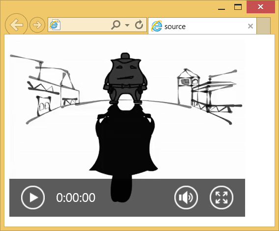

Элемент <source>
| Internet Explorer | Chrome | Opera | Safari | Firefox |
| 9 | 8 | 10.50 | 4 | 3.5 |
| Android | Firefox Mobile | Opera Mobile | Safari Mobile |
| 2 | 3.5 | 11 | 4 |
Вставляет звуковой или видеофайл для элементов <audio> и <video>. Обобщенно такие файлы называются медийными. Также применяется для добавления изображений в контейнере <picture>
Когда располагается внутри <audio> или <video>, элемент <source> должен идти после медийных файлов, но до <track>. Внутри <picture> он должен идти перед <img>.
Синтаксис
<audio>
<source src="URL">
</audio>
<video>
<source src="URL">
</video>
<picture>
<source srcset="...">
</picture>
Закрывающий тег
Аттрибуты
- media
- Определяет устройство, для которого будет воспроизводиться файл.
- sizes
- Задаёт размеры изображений для разных макетов страницы.
- src
- Адрес медиа-файла.
- srcset
- Изображения, которые используются в разных ситуациях (для экранов планшетов, для экранов ретина и др.).
- type
- MIME-тип медийного источника.
Пример
<!DOCTYPE html>
<html>
<head>
<meta charset="utf-8">
<title>source</title>
</head>
<body>
<video width="400" height="300" controls="controls">
<source src="video/duel.ogv" type='video/ogg; codecs="theora, vorbis"'>
<source src="video/duel.mp4" type='video/mp4; codecs="avc1.42E01E, mp4a.40.2"'>
<source src="video/duel.webm" type='video/webm; codecs="vp8, vorbis"'>
Элемент video не поддерживается вашим браузером.
<a href="video/duel.mp4">Скачайте видео</a>.
</video>
</body>
</html>Результат примера показан на рис. 1.

Рис. 1. Воспроизведение видеофайла
Спецификация ?
| Спецификация | Статус |
|---|---|
| WHATWG HTML Living Standard | Живой стандарт |
| WHATWG HTML Living Standard | Живой стандарт |
Спецификация
Каждая спецификация проходит несколько стадий одобрения.
- Recommendation (Рекомендация) — спецификация одобрена W3C и рекомендована как стандарт.
- Candidate Recommendation (Возможная рекомендация) — группа, отвечающая за стандарт, удовлетворена, как он соответствует своим целям, но требуется помощь сообщества разработчиков по реализации стандарта.
- Proposed Recommendation (Предлагаемая рекомендация) — на этом этапе документ представлен на рассмотрение Консультативного совета W3C для окончательного утверждения.
- Working Draft (Рабочий проект) — более зрелая версия черновика после обсуждения и внесения поправок для рассмотрения сообществом.
- Editorʼs draft (Редакторский черновик) — черновая версия стандарта после внесения правок редакторами проекта.
- Draft (Черновик спецификации) — первая черновая версия стандарта.
Особняком стоит живой стандарт HTML (Living) — он не придерживается традиционной нумерации версий, поскольку находится в постоянной разработке и обновляется регулярно.